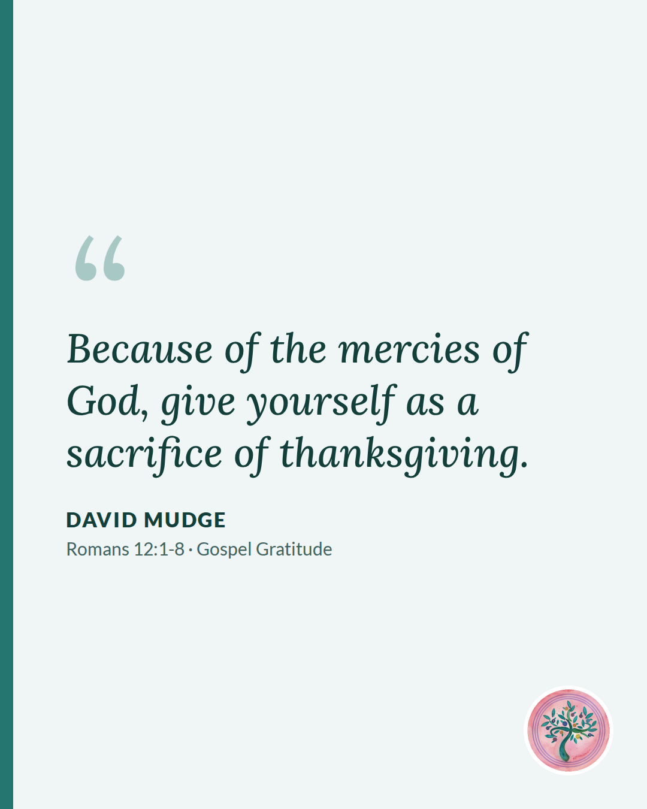
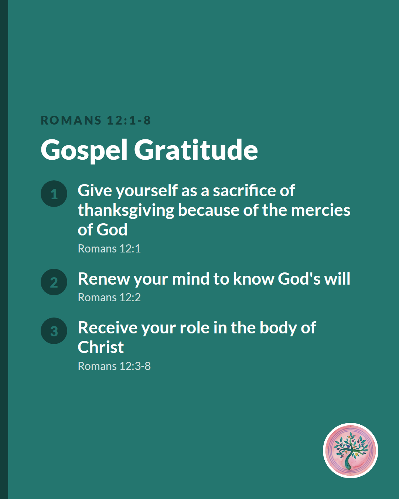
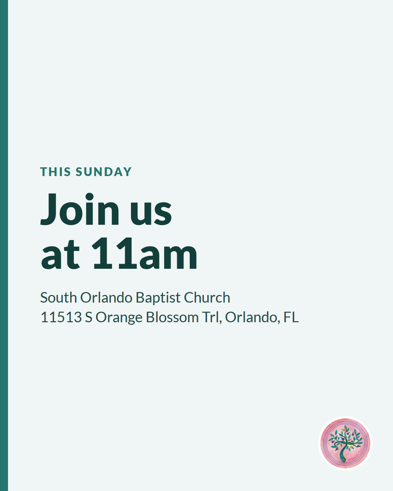

Everything here was made from one thing: the sermon you already posted. 6 graphics and 3 short video clips, with captions, scheduled across the week. Every quote is your preacher's own words, checked against the sermon.
Your week
Mon Nov 30
· 09:00Sermon recap

["This week we were glad to hear from our guest preacher, David Mudge, who brought us a Thanksgiving-week message from Romans 12:1-8 called \"Gospel Gratitude.\"","","After eleven chapters on the mercies of God, Paul appeals to us to present our bodies as a living sacrifice. We heard that this is not a debt we pay or a bargain we strike with God. It is a joyful sacrifice of thanksgiving, like a child bringing a flower to a father who has loved and provided for them. We also heard that we do not do it in our own strength. The Spirit empowers it.","","From there we looked at two applications. First, renew your mind. We are not meant to be pressed into the world's mold. God changes our desires and affections as we worship, pray, read our Bibles, and give thanks. Second, receive your role in the body of Christ. Every believer has a gift, and we use those gifts to serve one another out of gratitude. We don't use them to earn love we already have in Christ.","","We were reminded that God's love is not oppressive. He made each of us with care, and we are stronger together.","","Take a moment this week to thank God for his spiritual blessings, and ask where you can plug in and serve. We would love to have you with us on Sunday."]
Mon Nov 30
· 18:00Video clip (Reel)
Which is stronger, the north wind or the sunshine? Our guest preacher used a simple story to show how God's love works. We don't give ourselves to God because we are forced. His warm, steady love draws out a joyful, freely given response of thanksgiving. Rest in that love this week.
Tue Dec 1
· 09:00Quote graphic

"Because of the mercies of God, give yourself as a sacrifice of thanksgiving." This was the heart of Sunday's message from Romans 12:1-8. Paul doesn't ask us to earn God's favor. He appeals to us on the basis of mercy already given in Christ. As Thanksgiving week comes, what is one way you can respond to God's mercy with gratitude today? 🙏
#GospelGratitude #Romans12 #Thanksgiving #SouthOrlandoBaptist
Tue Dec 1
· 18:00Video clip (Reel)
The gospel is not a bargain with God. We come as beggars, and he loves us as his sons and daughters. What we give back is the joyful response of a child to a loving Father. A short word on what gratitude really looks like from Romans 12.
Wed Dec 2
· 09:00Quote graphic

"This is God's love, the sunshine of his love that rests on you so that you freely and joyfully give everything to him out of thanksgiving." We were reminded Sunday that gratitude isn't forced from us. It grows as we rest in the warmth of God's love in Christ. Where do you need to bask in his love this week?
#GospelGratitude #Romans12 #GodsLove #SouthOrlandoBaptist
Wed Dec 2
· 18:00Video clip (Reel)
What did Paul mean by a "living sacrifice"? Our guest preacher took us back to the Old Testament sacrifice of thanksgiving. It was freely given after God's salvation, and it was a celebration of relationship with him. A good look at the background of Romans 12:1.
Thu Dec 3
· 09:00Quote graphic

"The gospel says you're already loved, you're already accepted. And so you can just use your gift out of thanksgiving and worship, not to earn anyone's love." Every one of us has a part in the body of Christ. We serve from love, not for love. Is there a way you could plug in and serve our church family this season? 💛
#BodyOfChrist #Romans12 #SpiritualGifts #SouthOrlandoBaptist
Fri Dec 4
· 09:00Main points

Sunday's message from Romans 12:1-8, Gospel Gratitude: Give yourself as a sacrifice of thanksgiving because of the mercies of God. We saw two ways that gratitude shapes us. First, renew your mind to know God's will. Second, receive your role in the body of Christ. If you missed it, we'd love for you to watch the message. Which of these points do you most need to hear today?
#GospelGratitude #Romans12 #SundaySermon #SouthOrlandoBaptist
Sat Dec 5
· 10:00Sunday invite

We'd love to worship with you this Sunday at 11am! South Orlando Baptist Church, 11513 S Orange Blossom Trl, Orlando, FL. There's a seat for you. 🧡
Want this every week?
Keep posting your sermon to YouTube. We make and post the rest to your Instagram and Facebook, or send it to you to approve first. $79/month, cancel anytime.
See plans and subscribe
Questions? Reply to the email this came in, or write to joelspulpittopost@gmail.com